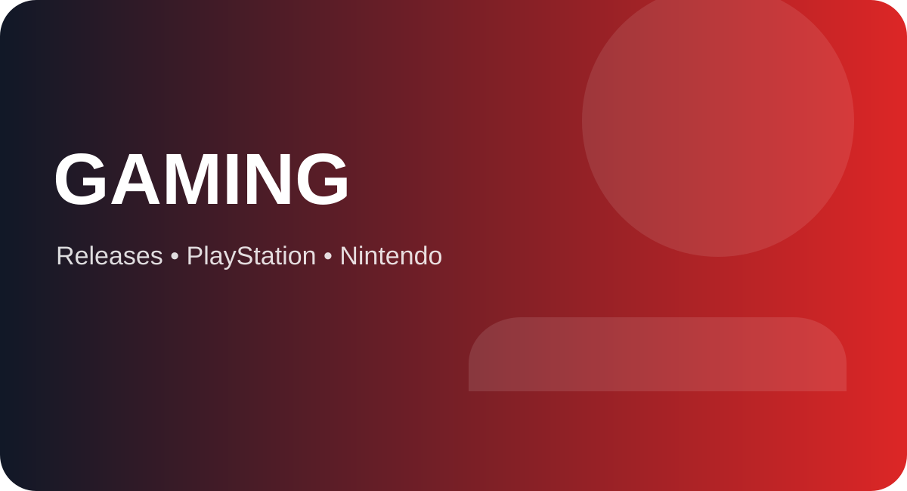

Apex Legends’ Godzilla-themed event begins November 10 and runs through December 1, bringing a transformed Storm Point, monster-themed rewards and limited-time activities.
A monster-sized event arrives in the Outlands
Respawn and EA have announced a Godzilla-themed event for Apex Legends, scheduled to run from November 10 through December 1, 2026. The crossover turns the battle royale’s world toward giant-monster spectacle, with Storm Point at the centre of the event’s changes.
The official announcement frames the event around surviving the destruction caused by Godzilla or taking advantage of the chaos. The map experience and event activities are designed to make the monster presence part of the match rather than just a cosmetic background.
Event rewards and themed cosmetics
Players can work through event content to earn rewards and access monster-inspired cosmetics. EA’s announcement details a themed reward pass and character looks drawing on the Godzilla universe and other kaiju-style designs.
The event also includes Twitch Drops scheduled for November 10–17. Players should check the official event page for the exact viewing requirements and reward availability in their region.
Check the dates before planning a grind
The event window is limited, ending on December 1. Individual rewards, challenges and Twitch Drops may have their own requirements and deadlines within that broader period.
Players who want specific cosmetics should review the official event schedule rather than assume every item remains available for the entire event.